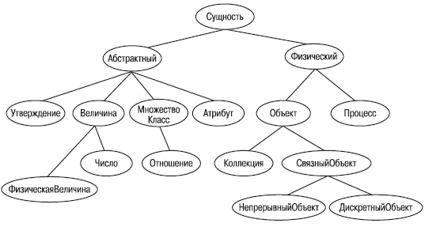

Онтология SUMO содержит наиболее общие и самые абстрактные концепты, имеет исчерпывающую иерархию фундаментальных понятий (около 1 тыс.), а также набор аксиом (примерно 4 тыс.), определяющих эти понятия. Назначение SUMO — содействовать улучшению интероперабельности данных, извлечения и поиска информации, автоматического вывода и обработки естественного языка.

WordNet — один из наиболее полно разработанных тезаурусов общего назначения...
В целом WordNet можно представить как сеть, в узлах которой находятся синсеты — лексикализованные понятия. Основными типами связей между узлами являются гипонимия и меронимия.
ТЕЗАУРУС - словарь, в котором слова, относящиеся к каким-либо области знания, расположены по тематическому принципу и показаны семантические отношения (родо-видовые, синонимические и др.) между лексическими единицами. В информационно-поисковых тезаурусах лексические единицы текста заменяются дескрипторами...
В 70-х гг. 20 в. получили распространение информационно-поисковые тезаурусы.
При автоматизированном информационном поиске ищутся документы, у которых индекс содержит не только дескрипторы запроса, но и те дескрипторы, которые находятся с ними в определённых семантических отношениях.
Иногда бывает полезно выделять в Т. конкретные ассоциативные отношения, специфичные для данной тематической области: болезнь — возбудитель, прибор — назначение (или измеряемая величина) и т. п. Положение лексической единицы (слова, словосочетания) в Т. характеризует его смысл в языке; знание системы семантических отношений, в которые вступает данное слово (в том числе и рубрик, куда оно входит), позволяет судить о смысле этого слова.
В широком смысле Т. интерпретируют как описание системы знаний о действительности, которыми располагает индивидуальный носитель информации или группа носителей.
Источник: http://ai.obrazec.ru/forum/viewtopic.php?p=27531#27531 - Обсуждение "Shareware проект AIAssistant"
http://www.intuit.ru/department/expert/ontoth/
Обучающий курс: Онтологии и тезаурусы: модели, инструменты, приложения
Авторы: Б.В. Добров, В.В. Иванов, Н.В. Лукашевич, В.Д. Соловьев
Курс направлен на формирование базовых знаний об онтологиях и тезаурусах и практических навыков по проектированию и применению онтологий при разработке компонентов интеллектуального программного обеспечения.
Курс знакомит студентов с основными понятиями области представления знаний, примерами лучшего опыта в разработке систем основанных на онтологиях и тезаурусах, описывает задачи, решаемые с их помощью, а также набор инструментальных средств проектирования и представления онтологий и информационно-поисковых тезаурусов. Практическая составляющая курса включает задания по самостоятельной разработке онтологии для некоторой предметной области и задачи по применению этого ресурса в соответствующей области для автоматической обработки текста, интеллектуального поиска.
© AIKernel 2010-2011
22.11.2010 - 09.05.2011